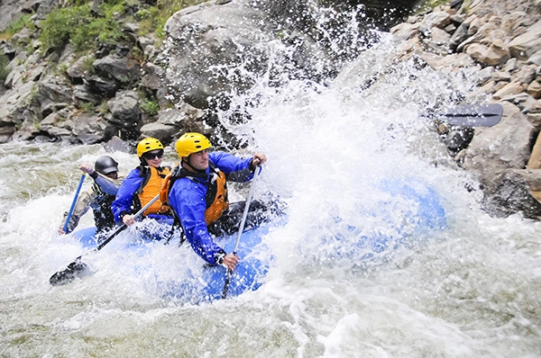
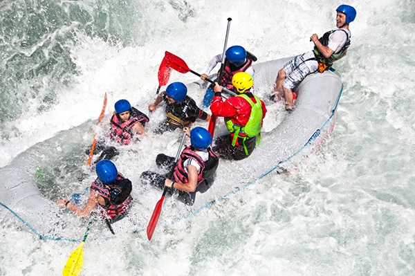
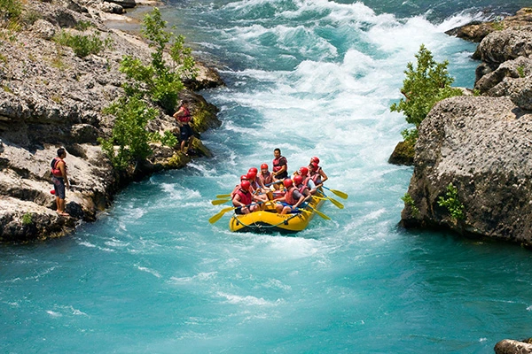

Contact Us!!







| River | Age | Difficulty | Duration | Availability |
|---|---|---|---|---|
| Tom Sawyer | 7+ years | Easy | 1 hour | April-October |
| Katherine | 12+ years | Normal | 1 hour | May-September |
| Olivia | 12+ years | Normal | 1 hour | April |
| Pipo | 17+ years | Hard | 1 hour | June |
| Alta Gracia | 15+ years | Normal | 2 hours | October |
| Medina | 5+ years | Easy | 1 hour | June-October |